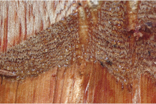
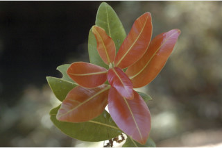
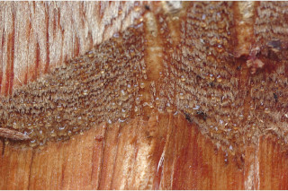
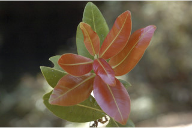
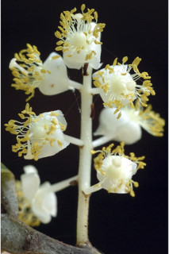
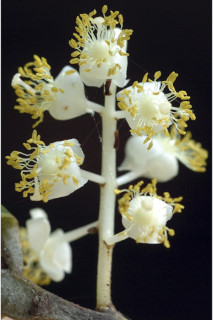

Trees up to 30 m tall.
30ಮೀ ಎತ್ತರದವರೆಗೆ ಬೆಳೆಯುವ ಮರಗಳು.
30 മീറ്റര് വരെ ഉയരത്തില് വളരുന്ന മരങ്ങള്.
மரம் 30 மீ. உயரம் வரை வளரக்கூடியது.
Outer bark yellowish with strong boat shape fissures; blaze reddish.
ಹೊರ ತೊಗಟೆ ಹಳದಿ ಬಣ್ಣದಲ್ಲಿದ್ದು ಬಲಿಷ್ಠವಾದ ದೋಣಿಯಾಕಾರದ ಸೀಳಿಕೆಗಳನ್ನು ಹೊಂದಿರುತ್ತದೆ; ಕಚ್ಚು ಮಾಡಿದ ಜಾಗ ಕೆಂಪಾಗಿರುತ್ತದೆ.
തോണിയുടെ ആകൃതിയുള്ള, കനത്ത വിള്ളലുകളോടുകൂടിയ പുറംതൊലിക്ക് മഞ്ഞനിറമാണ്; വെട്ട്പാടിന് ചുവപ്പ്നിറം.
மரத்தின் பட்டை வெளிப்புறத்தில் மஞ்சள் நிறமானவை, நன்கு படகு போன்ற பிளவுகளுடையது; உள்பட்டை சிவப்பு நிறமானவை.
Young branchlets quadrangular, drying yellowish.
ಎಳೆಯ ಕಿರುಕೊಂಬೆಗಳು ನಾಲ್ಕು ಕೋನಗಳನ್ನು ಹೊಂದಿರುತ್ತವೆ ಹಾಗೂ ಒಣಗಿದಾಗ ಹಳದಿ ಬಣ್ಣದಲ್ಲಿರುತ್ತವೆ.
ഉണങ്ങുമ്പോള് മഞ്ഞനിറമാകുന്ന ഇളം ഉപശാഖകള് ചതുഷ്കോണോടുകൂടിയതാണ്.
சிறிய நுனிக்கிளைகள் குறுக்குவெட்டுத் தோற்றத்தில் நான்கு கோணங்களுடையது.
Sap watery turning yellow, sticky.
ಸಸ್ಯರಸ ಜಲರೂಪಿಯಾಗಿದ್ದು ನಂತರ ಹಳದಿ ಬಣ್ಣಕ್ಕೆ ತಿರುಗುತ್ತದೆ ಹಾಗೂ ಅಂಟು ಸ್ವರೂಪದ್ದಾಗಿರುತ್ತದೆ.
മഞ്ഞനിറമായി മാറുന്ന ജലമായ സ്രവം ഒട്ടുന്നതാണ്.
நீரைப்போன்றது, உலரும் போது மஞ்சள் நிறமடைகிறது, ஒட்டும் தன்மையுடையது.
Simple, opposite, decussate; petiole 0.3-0.5 cm long, planoconvex in cross section, glabrous; lamina 4-8 x 2-4.5 cm, usually obovate to oblanceolate, apex rounded to retuse, base rounded or subtruncate, coriaceous, glossy above; secondary_nerves numerous, close, parallel, terminating at the thick margin.
ಎಲೆಗಳು ಸರಳವಾಗಿದ್ದು,ಕತ್ತರಿಯಾಕಾರದ ಅಭಿಮುಖ ಜೋಡನಾ ವ್ಯವಸ್ತೆ ಯಲ್ಲಿದ್ದು 0.3 ರಿಂದ 0.5 ಸೆಂ.ಮೀ ಉದ್ದದ ಎಲೆತೊಟ್ಟುಗಳನ್ನು ಹೊಂದಿರುತ್ತವೆ; ಕಿರುತೊಟ್ಟುಗಳು ಅಡ್ಡ ಸೀಳಿದಾಗ ಸಪಾಟ ಪೀನಮಧ್ಯ ಆಕಾರದಲ್ಲಿದ್ದು ರೋಮರಹಿತ-ವಾಗಿರುತ್ತವೆ; ಎಲೆಪತ್ರಗಳು 4-8 X 2-4.5 ಸೆಂ.ಮೀ ಗಾತ್ರ ಹೊಂದಿದ್ದು, ಸಾಮಾನ್ಯವಾಗಿ ಬುಗುರಿಯಾಕಾರದಿಂದ ಬುಗುರಿ-ಭರ್ಜಿ ಆಕಾರದಲ್ಲಿರುತ್ತವೆ; ಎಲೆ ತುದಿ ದುಂಡಾಕಾರದಿಂದ ದುಂಡಾಕಾರದ ತುದಿಯಲ್ಲಿ ತಗ್ಗುಳ್ಳ ಮಾದರಿಯಲ್ಲಿದ್ದು, ಎಲೆಯ ಬುಡ ದುಂಡಾದ ಅಥವಾ ಉಪ-ಛಿನ್ನಾಗ್ರ ರೂಪದ್ದಾಗಿರುತ್ತದೆ, ಎಲೆಗಳು ತೊಗಲನ್ನೋಲುವ ಮಾದರಿ-ಯಲ್ಲಿದ್ದು, ಮೇಲ್ಭಾಗದಲ್ಲಿ ಹೊಳಪನ್ನು ಹೊಂದಿರುತ್ತವೆ; ಎರಡನೇ ದರ್ಜೆಯ ನಾಳಗಳು ಬಹುಸಂಖ್ಯೆಯಲ್ಲಿದ್ದು, ಕಡಿಮೆ ಅಂತರದಲ್ಲಿದ್ದು ಸಮಾಂತರದಲ್ಲಿರುತ್ತವೆ ಹಾಗೂ ಎಲೆಯ ದಪ್ಪವಾದ ಅಂಚಿನಲ್ಲಿ ಕೊನೆಗೊಳ್ಳುತ್ತವೆ;
സമ്മുഖ ഡെക്കസേറ്റ് ക്രമത്തിലുള്ള ലഘുപത്രങ്ങള്; ഇലഞെട്ടിന് 0.3 സെ.മി മുതല് 0.5 സെ.മി വരെ നീളവും, കുറുകേയുള്ള ഛേദത്തില് മുകള് വശം പരന്നും കീഴ്ഭാഗം ഉയര്ന്നിരിക്കുന്നതുമായ ഘടന, അരോമിലം; പത്രഫലകത്തിന് 4 സെ.മി മുതല് 8 സെ.മി വരെ നീളവും, 2 സെ.മി മുതല് 4.5 സെ.മി വരെ വീതിയും, സാധാരണയായി അപഅണ്ഡാകാരം തൊട്ട് അപകുന്താകാരം വരെ, പത്രാഗ്രം വൃത്താകാരംതൊട്ട് ചെറിയൊരു കൂനുപ്പോട്കൂടിയ വൃത്താകാരം വരെയും, പത്രാധാരം വൃത്താകാരത്തിലോ ഏതാ് വെട്ടിമുറിച്ചതുപോലെയോ ആണ്, ചര്മ്മില പ്രകൃതം, തിളങ്ങുന്ന മുകള്ഭാഗം; വളരെ അടുത്തതും, സമാന്തരമായി പോയി, കട്ടിയേറിയ അരികില് അവസാനിക്കുന്നതുമായ ധാരാളം ദ്വിതീയ ഞരമ്പുകള്.
இலைகள் தனித்தவை, எதிரடுக்கமானவை, குறுக்குமறுக்கமானவை; இலைக்காம்பு 0.3-0.5 செ.மீ. நீளமானது, குறுக்குவெட்டுத் தோற்றத்தில் பிளேனோகான்வக்ஸ், உரோமங்களற்றது; இலை அலகு 4-8 X 2-4.5 செ.மீ., பொதுவாக தலைகீழ் முட்டை வடிவம் முதல் தலைகீழ் ஈட்டி வடிவம், அலகின் நுனி வட்டமானது முதல் சிறு பிளவுடையது (ரெட்யுஸ்), அலகின் தளம் வட்டமானது முதல் சிறிது சதுரமானது (ட்ரன்கேட்), கோரியேசியஸ், அலகின் மேற்பரப்பு பளபளப்பானது; இரண்டாம் நிலை நரம்புகள் அதிக எண்ணிக்கையில் காணப்படும், நெருக்கமானது, இணையானவை (பேரலல்), விளிம்பின் இறுதி வரை செல்பவை.
Flowers white in axillary panicle.
ಹೂಗಳು ಶ್ವೇತ ವರ್ಣ ಹೊಂದಿದ್ದು ಕವಲೊಡೆಯುವ ಪುಷ್ಪಮಂಜರಿಯಲ್ಲಿರುತ್ತವೆ.
വെളുത്ത പൂക്കള് കക്ഷീയ പാനിക്കിള് പൂങ്കുലകളില് ഉാകുന്നു.
மலர்கள் வெள்ளை நிறமானவை, இலைக்கோணங்களில் காணப்படும் பேனிக்கிள்.
Drupe yellowish brown, ovoid to ellipsoid, to 1.5 cm long, 1-seeded.
ಡ್ರೂಪ್ ಗಳು ಹಳದಿ ಮಿಶ್ರಿತ ಕಂದು ಬಣ್ಣ ಹೊಂದಿದ್ದು ಅಂಡಾಕಾರದಿಂದ ಅಂಡವೃತ್ತಾಕೃತಿಯಲ್ಲಿದ್ದು, 1.5 ಸಂ ಮೀ ಉದ್ದವಿದ್ದು ಒಂದು ಬೀಜವನ್ನೊಳ-ಗೊಂಡಿರುತ್ತವೆ.
കായ 1.5 സെ.മി വരെ നീളമുള്ളതും. ഒറ്റവിത്തുള്ളതും, അണ്ഡാകാരം തൊട്ട് ദീര്ഘഗോളാകാരം വരെയുള്ളതുമായ, മഞ്ഞകലര്ന്ന തവിട്ടുനിറത്തിലുള്ള ആമ്രകമാണ്.
உள்ளோட்டுத்தசைகனி (ட்ரூப்), மஞ்சள் கலந்த ப்ரவுன் நிறமானது, முட்டை முதல் நீள்வட்டம் வடிவானது, 1.5 செ.மீ. வரை நீளமானது, ஒர் விதையுடையது.


 





 
